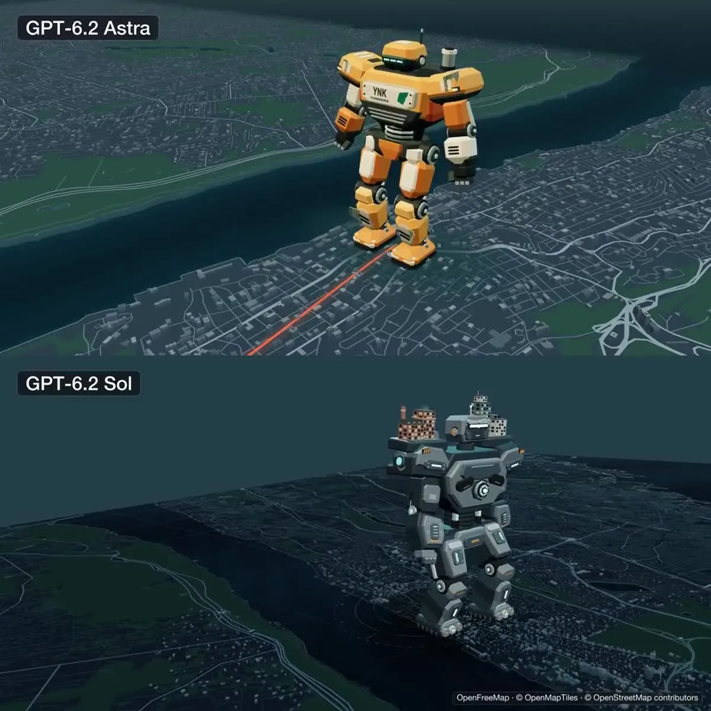
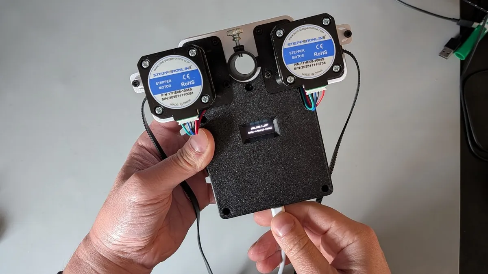
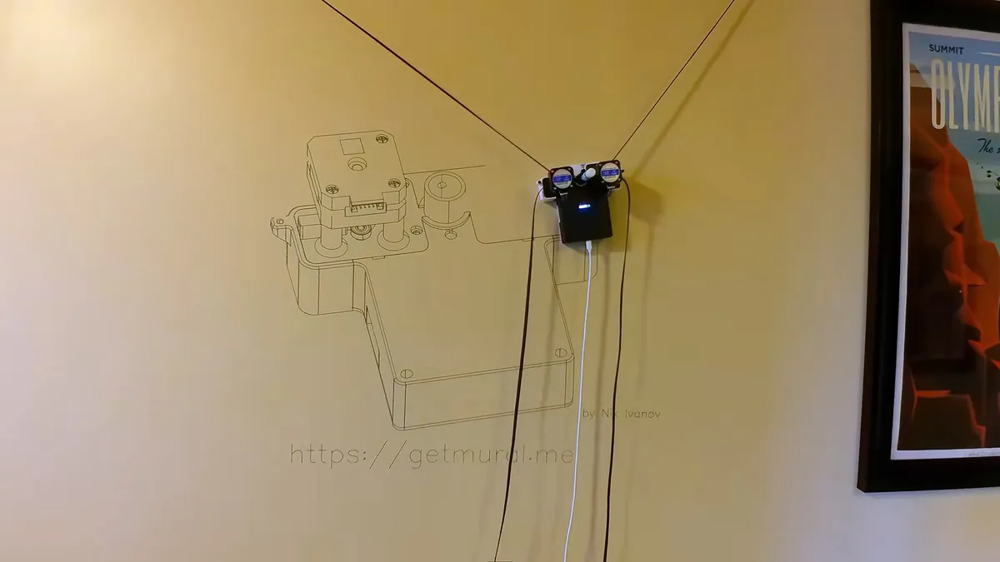

HUMAN.md's own preview image: a “Last Supper” of produce-headed guests. Pinned: the screenshot @cmchelsimehta posted with “the coolest website i have seen in my life!!!” (838 ♥).
Lead story · Creative web
HUMAN.md: a designer's weird, funny scrolling manifesto became the website everyone argued about
A designer's illustrated scrolling manifesto about what people still bring in the AI era.
Produce-headed dinner guests, scroll-triggered animations and one big question: what is a designer for when AI can make the average website in seconds?
HUMAN.md is a one-page site by designer Briana (Mazzio) May. It's written like a plain-text notes file (“a working manifesto. notes-to-self, mostly”) and it lists what humans still bring when machines make good-enough work: “break the rule on purpose”, “find the thing in the weird place”, “own the output, fully.” Each idea is a wild, animated illustrated scene that plays as you scroll.
Why it blew up: @vineerpasam's post (“the creativity behind this website is fu*king unreal”) passed 2.1 million views and 9.3k bookmarks, and the site made the Hacker News front page. Then came the backlash. @krishdotdev's “The moment i land on websites like these, i immediately leave” got almost as many likes (4,493), a far ruder take got 3,867, and the replies turned into a big argument about scroll-heavy “motion sites” versus fast, plain pages.
Try it tonight: open human-md.ai on a laptop and scroll slowly; it's built to be scrolled. If you build landing pages (hello, MRR Planet), it's a good reference for using illustration and pacing to tell a story, and the backlash is a good reminder to keep the important stuff fast.
“Unslopping a vibecoded website”: an AI gets real design references and the page stops looking AI-made
An MCP library of real websites helps an AI un-slop a vibe-coded page.
♥ 5,273⟲ 152🔖 9,599👁 543.3k
Read the storyFrames from @koppkev's 29-second demo: the polished “after” page. Inset: the generic AI-built page he started from.
Kev (@koppkev), a creative developer, posted a 29-second video. He takes a bland, obviously AI-generated landing page (a polar expedition site) and lets his coding agent pull layouts, type and animations from Details, a hand-picked library of real, award-level websites. A few prompts later the page has proper spacing, typography and motion.
Why people care: “AI slop” design is the running joke of vibe coding, and this is a clear fix. Instead of guessing, the agent copies patterns from sites people actually admire. The post has more bookmarks (9.6k) than likes (5.3k), so lots of people are saving it to try.
How to try it: Details connects to Claude, Cursor and other agents through an MCP server (a plug-in that gives the AI a new tool). It's a commercial product: the site shows plans at $9 and $19 a month, plus some free content.
Claude Code's new “Code Mode” writes little scripts to drive its own tools
Claude Code can now write a short script that chains its own tools together.
♥ 6,925⟲ 356🔖 6,931👁 709.1k
Read the storyThe Claude Code repo card. The announcement post had no image.
Anthropic's coding agent Claude Code normally calls one tool at a time: run this command, edit that file, read the output, repeat. The experimental Code Mode lets it write a short script that chains its tools together, running steps in parallel and passing results between them. It can also keep talking to you while a long command is still running.
It was the most-liked dev post of the night, and bookmarks matched likes almost exactly (6.9k each). That usually means people plan to switch it on. Early reactions are mixed with a lot of “please put this in the Agents SDK too” (Theo, 372 ♥).
A small add-on file doubled a local model's score at coding in one specific agent
A small LoRA add-on doubled a local Qwen model's coding score inside one agent.
♥ 3,623⟲ 388🔖 2,434👁 176.4k
Read the storyBefore/after chart from Clem Delangue's post (Hugging Face's own numbers).
Hugging Face released Qwen3.8-27B-pi-adapted. It's a LoRA adapter (a small add-on layer you put on top of a model you already have) for Qwen3.8-27B. They trained it with reinforcement learning inside pi, an open-source coding agent, so the model learns that agent's tools and habits.
Their numbers: SWE-bench Pro (hard subset) 29.4% → 62.7%, Terminal-Bench 2.1 39.5% → 55.8%, and 55–62% fewer tool calls per task. Those are Hugging Face's own results, so wait for independent tests. The bigger idea is the one people are excited about: tune an open model to your agent instead of waiting for a bigger model. The blog post says they also have adapters for opencode and hermes.
Try it: the adapter is Apache-2.0 on Hugging Face. It needs a machine that can run a 27B model; the blog explains how to serve it.
Apple posted open video models that react while you steer, like a game
Apple open-sourced video models you steer in real time, more like a game.
♥ 898⟲ 43🔖 1,162👁 62.1k
Read the storyFrame from Apple's demo video shared by @_akhaliq: the same keyboard input, with and without FastFrames.
Apple released FastFrames on Hugging Face: two video generators (a small 1.3B and a large 14B) that make 480p video at “interactive latency”. The model card times the small one at about 35 ms per frame on one GPU. In the demo you move a camera with the keyboard and the scene responds right away, while the normal model stutters.
Why it's fun: fast video models like this are the building block for AI “world” toys where you walk around a generated scene. Caveats: it uses Apple's research licence (not standard open source), and the setup needs Linux and an NVIDIA GPU, so it won't run on a Mac yet.
Stripe Press's new website is a bookshelf you can actually read
Stripe Press made a 3D bookshelf you can pull down and actually read.
♥ 839⟲ 61🔖 377👁 57.8k
Read the storyFrame from Devin Jacoviello's launch video: books pulled off a 3D shelf, then opened to real pages.
Stripe Press is Stripe's book publisher (Poor Charlie's Almanack, The Dream Machine, Hamming's The Art of Doing Science and Engineering). Designer Devin Jacoviello launched its new site: a 3D shelf where you pull out a book, flip through every page, play audiobook previews and even change the lighting. He says the idea is four years old and was built over the past year.
Designers are passing it around as proof that hand-made, playful web design still wins. A nerdy detail: the site has an /llms.txt and a /catalog.json “for AI agents”, so bots can shop it too.
Firmware is no longer the moat hardware manufacturers thought it was.@geerlingguy, quoting Chris Titus's LG TV debloat · 1,390 ♥ · post
The moment i land on websites like these, i immediately leave.@krishdotdev, on HUMAN.md · 4,493 ♥ · post
GPT-6.2 is getting roasted on X. Meanwhile, Astra and Sol just took #1 and #2 on my object detection benchmark.@skalskip92 · 717 ♥ · post

New model, fun demos
OpenAI's GPT-6.2 got roasted on X, then people saw what it does with video
While GPT-6.2 got roasted, two new models topped a video object-detection test.
♥ 917⟲ 59🔖 426👁 57.7kHN 1,202 pts
Read the story@skalskip92's test: GPT-6.2 Astra tracks basketball players and draws them on a top-down court. Inset: Simon Willison's “Yonkers turns into a mech” three.js test.
OpenAI released GPT-6.2 Astra (its top model) and Sol (cheaper), and it was the biggest story on Hacker News (1,202 points). X was mostly roasting the launch. ThePrimeagen's “is it so over for OpenAI?” got 1,338 likes.
The demos changed the mood. Piotr Skalski (Roboflow) asked Astra to place every player on a top-down court map from game footage, and later got 3D poses from a single API call. “Awkwardly positive results”: on his object-detection benchmark, Astra and Sol took #1 and #2. Simon Willison's mech test was less kind; he says neither beat Claude Fable 5.2 or Gemini 4 Carbon.
Try it: in the API as gpt-6.2-astra / gpt-6.2-sol ($8/$40 and $2/$10 per million tokens, per Simon's post), and in GitHub Copilot.
A real Linux kernel, compiled to WebAssembly, boots in your browser in under a second
A real Linux kernel compiled to WebAssembly boots in a browser tab instantly.
302★ GitHubGPL-2.0Hackaday feature
Read the storyUnkernel booted in a browser tab (screenshot from Hackaday's write-up).
Unkernel isn't a fake terminal or a remote server. It's the actual Linux 7.x kernel (scheduler, memory management, ext4, networking) compiled into one WebAssembly file. Only the user programs are emulated, with a JIT. You get a shell, a package manager, a disk that persists, internet access, even a screen with sound, all running on your own device.
Hackaday wrote it up this morning, and it's a perfect “how is that possible” toy. It's also handy for docs and tutorials: you can embed a real Linux box in a web page with its JavaScript SDK.
A skill that makes your coding agent check its web code against Chrome's own rules
A skill that makes your coding agent check its web UI against Chrome's own rules.
♥ 913⟲ 50🔖 1,227👁 54.7k
Read the storyScreenshot from @ctatedev's post: the agent fixing issues, then checking the score in a real browser.
Chris Tate (@ctatedev) shipped modern-web-guidance, a new skill for agent-browser (Vercel's open-source tool that lets AI agents drive a real browser, 52k stars). Your agent looks up Chrome's “Modern Web Guidance”, applies it to your code, then opens the page in a browser to check the result: layout shift, reduced motion, dark mode, dialog focus and more.
Why it's popular: agents write UI that looks fine but quietly breaks accessibility and performance. This closes the loop with a real check. Vercel's CEO called it “actually a huge deal for web performance” (504 ♥). It has 1.2k bookmarks to 913 likes.
Public security news worth knowing about, without the exploit write-through.
Security
Java4Shell: a critical bug in OpenJDK's Base64 decoder, and a patch landed yesterday
A critical OpenJDK bug in Base64 decoding. A patch shipped yesterday; update Java.
♥ 2,320⟲ 616🔖 600👁 169.2kHN 932 ptsCISA ♥ 10.3k
Read the storyCalif's Java4Shell poster, artwork by Michal Zalewski (lcamtuf).
Researchers at Calif disclosed Java4Shell (CVE-2026-114938), a serious memory-safety bug in OpenJDK's Base64 decoder on some newer Intel and AMD chips. They say it can lead to remote code execution in widely used Java software, and that they used an AI coding tool to help find it. Calif's own write-up post has 2,320 likes; a CISA alert asking organisations to patch immediately has 10,295 likes and 1.2 million views. It was also near the top of Hacker News (932 points).
Oracle and OpenJDK released a fix on Nov 17 (1pm Pacific). If you run Java on servers, update to the patched build. CISA's alert and Calif's write-up have the official guidance. We're not repeating the technical details here.
Phrack 73 is out: the legendary hacker zine dropped 23 new papers
The legendary hacker magazine dropped issue 73, and it landed on the HN front page.
♥ 155⟲ 31🔖 27👁 7,068HN 379 pts
Read the storyPhrack's current masthead, used as the issue's preview image.
Phrack, the magazine hackers have been reading since the mid-1980s, published issue 73. It showed up on the Hacker News front page yesterday (379 points). Mikko Hypponen's short announcement got 155 likes. The issue has 23 main papers plus history pieces, and a profile of reverse-engineering researcher Halvar Flake.
The intro is dated Sept 30, but it started circulating widely in the past day. We're linking the issue rather than recapping any of the research. If this is your kind of reading, start at the table of contents.
Robots, gadgets and hacks makers were sharing since yesterday's edition, each with what you'd need to build or try it.


Robot artist
Mural: a cheap robot that hangs on your wall and draws a giant picture
An ESP32 pen plotter hangs from a belt and draws giant pictures on your wall.
662★ GitHubHackaday feature
Read the storyMural 2.0 from Nik Ivanov's build video. Inset: Hackaday's photo of the plotter hanging on its belt.
Nik Ivanov's Mural 2.0 is a pen plotter for walls. The robot hangs from one belt anchored near the ceiling and pulls itself around with two motors, drawing a mural line by line with a marker. You upload an SVG or a photo over Wi-Fi, choose a squiggle or space-filling style, and it tells you the total line length before it starts.
Build it: it's open source and built from common parts in a 3D-printed case: an ESP32 FluidNC board, TMC2209 stepper drivers and two NEMA 17 pancake steppers. The full parts list (BOM) and firmware are on getmural.me. Nik's tips: you lose about 20% of the width at the edges, and markers start to fade after about 500 m of line.
Chris Titus is debloating LG smart TVs, and Jeff Geerling says firmware is no longer the moat
A new script strips bloat from rooted LG TVs. Geerling says firmware is no moat.
♥ 1,235⟲ 27🔖 373👁 76.2kGeerling quote ♥ 1,390
Read the storyRepo card for Chris Titus's brand-new lg-debloat script (made Nov 17).
Chris Titus (known for his Windows debloat utility) posted that debloating an LG TV is “insane how much performance you end up getting.” Overnight he published a script. It hides built-in apps you don't use, turns off promotions, and stops apps from preloading in the background. It keeps Plex, YouTube and your inputs, and it saves a backup so you can undo everything.
Jeff Geerling quoted it: “Firmware is no longer the moat hardware manufacturers thought it was” (1,390 ♥). Big caveat: it needs a rooted LG webOS TV with SSH access (Developer Mode alone isn't enough), and the README says applying changes hasn't been verified on a real TV with the new script yet. Run the read-only plan first. An Android TV version is next.
A tiny duck-faced robot riding a robot dog like a knight on a horse
A tiny duck-faced robot rides a four-legged robot dog like a knight.
♥ 85⟲ 11🔖 3👁 28.9k
Read the storyA frame from the clip: the little antenna-headed rider bobbing along on a LeRobot-stickered robot dog.
A short clip went around robotics X: a small robot with a duck-like face and antennas sits on the back of a four-legged robot dog, head bobbing, as the dog trots across an office. The dog carries a LeRobot sticker (Hugging Face's open-source robotics project). @LesyaHendrix says it was filmed at MIT: “Real hardware, no render, no stage lighting.”
Build or try: we couldn't find the original creator's post or any build files, so treat it as inspiration. If you want to make your own small robot, LeRobot has open code, guides and low-cost 3D-printed arms to start with.
Fab: simulate an ESP32 circuit board, compile its firmware and print its case, all in one app
One work-in-progress app simulates an ESP32 board, compiles firmware and prints the case.
♥ 261⟲ 12🔖 184👁 9,530
Read the storyFrames from Rik Arends's video: an ESP32 board simulated in 3D. Inset: the 3D-printable case Fab generates for it.
Developer Rik Arends showed a work-in-progress tool called Fab that does a lot at once: a full circuit-board simulator with a 3D renderer, a firmware compiler for ESP32-S3, ESP32-C3 and AVR chips, and a generated 3D-printed case with light pipes for the LEDs. He calls it getting “distracted a bit”.
Makers bookmarked it heavily (184 saves on 261 likes). Not out yet: in a reply, Rik says he'll hold the release until companion apps for Quest (XR) and iOS are ready.
Read the storyFlipper's “Live on Kickstarter” launch image.
Yesterday we covered the launch of Flipper One, the pocket Linux network multi-tool from the Flipper Zero team. It had about $6M at 19:24. By this morning (about 07:45 Rome time) the Kickstarter showed $10,450,520 from 19,835 backers, so it nearly doubled overnight.
Quick recap: 8-core Rockchip RK3576 running Debian-based Flipper OS, Wi-Fi 6E, gigabit Ethernet, eSIM and an M.2 slot for 5G, SDR or SSD. Rewards start at $399, and shipping is estimated for July 2027.
A 2000s firewall from the trash, reverse-engineered until it ran DOOM
A trash-picked 2000s FortiGate firewall was reverse-engineered until it ran DOOM.
Hackaday feature6 comments
Read the storyDOOM running on the trash-picked firewall, in green because only the green VGA pin was wired (Hackaday).
Matt Williams found a Fortinet FortiGate 60 enterprise firewall in the trash. Inside was a VIA C3, a 400 MHz x86 chip, so in theory it can run almost anything. The catch: the 128 MB of RAM was soldered on, and the only record of how to start it up was hidden in Fortinet's firmware. He reverse-engineered that, then got Linux 2.4 to boot and DOOM running on the framebuffer, all in green because only one VGA colour pin was hooked up.
Try it: his custom firmware is on GitHub (MIT). If you have an old x86 appliance in a drawer, Hackaday suggests wiring the board's spare pads to real connectors to make a fun little retro gaming box.